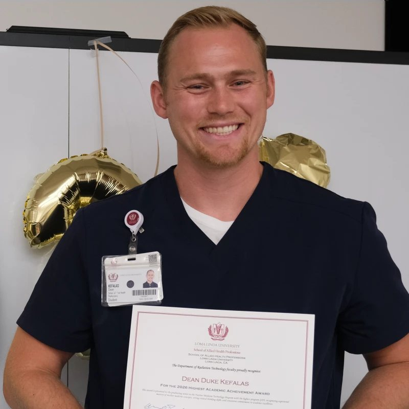

SPECT/CT & Gamma Cameras
- Siemens SPECT/CT
- GE SPECT/CT
- ADAC
- Digirad Ergo
The nuclear medicine and CT technologist behind Advanced Imaging's SPECT/CT, PET/CT and nuclear medicine services for hospitals and imaging clinics.

I'm Dean Kefalas, a nuclear medicine and CT technologist and the founder of Advanced Imaging. I trained in Loma Linda University's Nuclear Medicine Technology Program, where I received the 2026 Highest Academic Achievement Award, and completed clinical rotations at multiple sites working hands-on with the same systems hospitals and imaging clinics depend on every day.
That clinical background shapes how I help facilities. I understand what technologists need at the scanner, what physicians need in the images, and what administrators need from the investment. My goal is to help every hospital and imaging clinic choose and run equipment that delivers better answers for their patients.
I have worked at multiple clinical sites alongside experienced technologists and physicians, I gained hands-on experience across the daily work of a nuclear medicine department:
Hands-on experience across multiple manufacturers and modalities lets me compare platforms from a technologist's point of view: workflow, ease of use and image quality.
Advanced Imaging was built on a simple idea: better imaging equipment leads to better answers for physicians and better care for patients. We help hospitals and imaging clinics make confident decisions about the systems that power their nuclear medicine and molecular imaging services.
We focus exclusively on Nuclear Medicine, SPECT/CT and PET/CT, so every conversation starts from a deep understanding of your modality, your workflow and your patients.
To help every hospital and imaging center we serve choose, acquire and operate the right molecular imaging technology, so their clinicians get better answers and their patients get better care.
Focused exclusively on molecular imaging: Nuclear Medicine, SPECT/CT and PET/CT.
Straight answers and recommendations that put your facility's needs first.
One point of contact who returns calls and keeps your project moving.
Support that continues long after the contract is signed and the system is installed.
Book a free consultation with me to talk through your SPECT/CT, PET/CT or nuclear medicine needs.